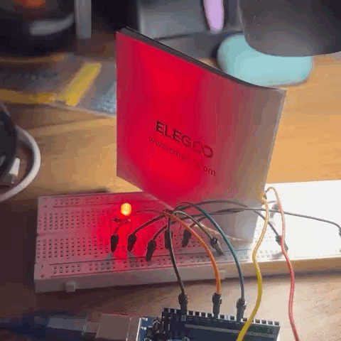
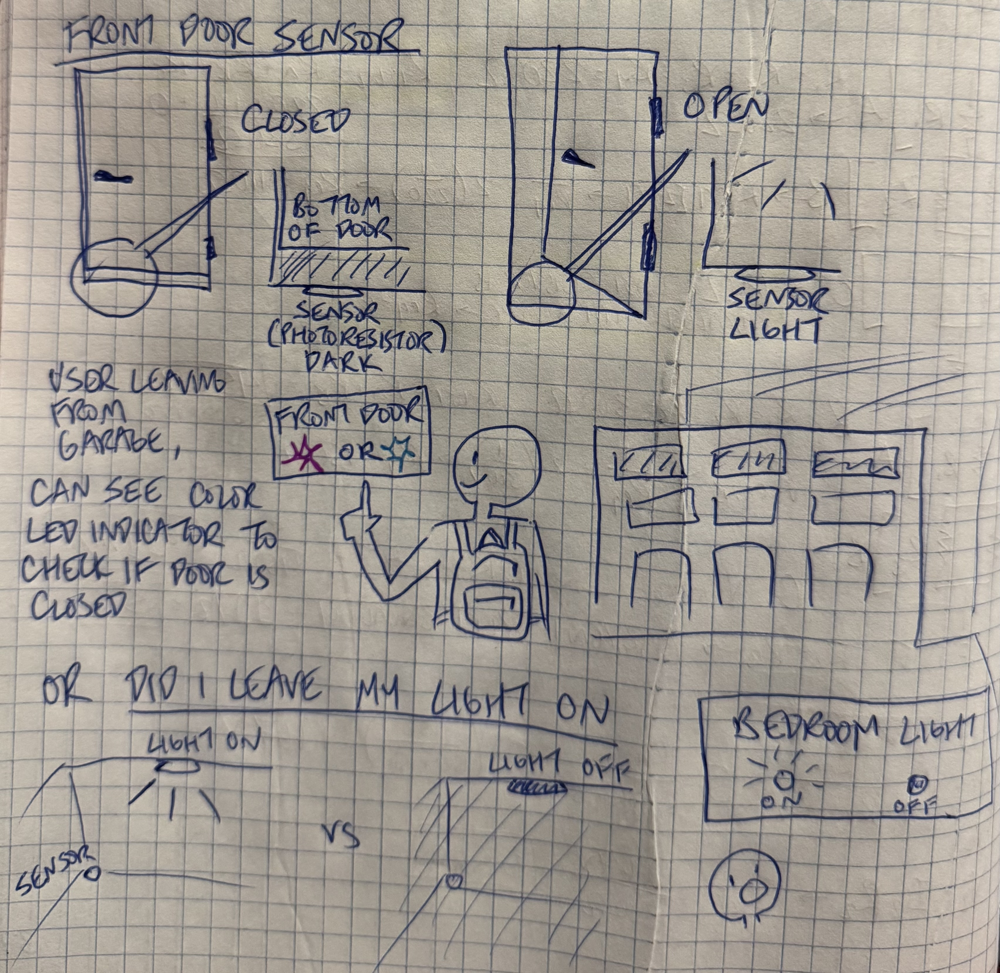
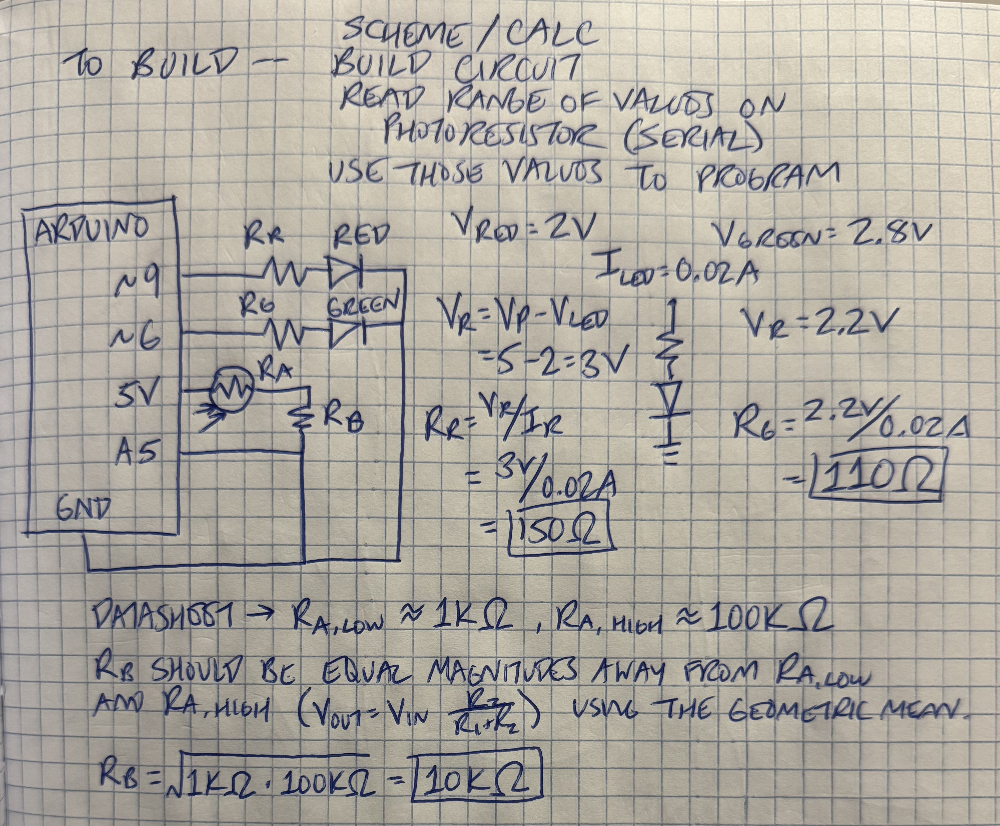
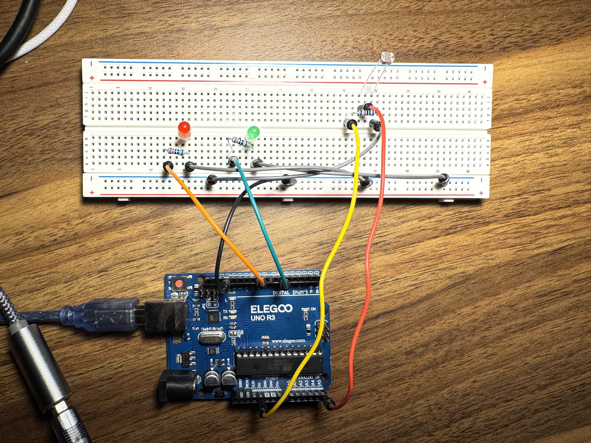
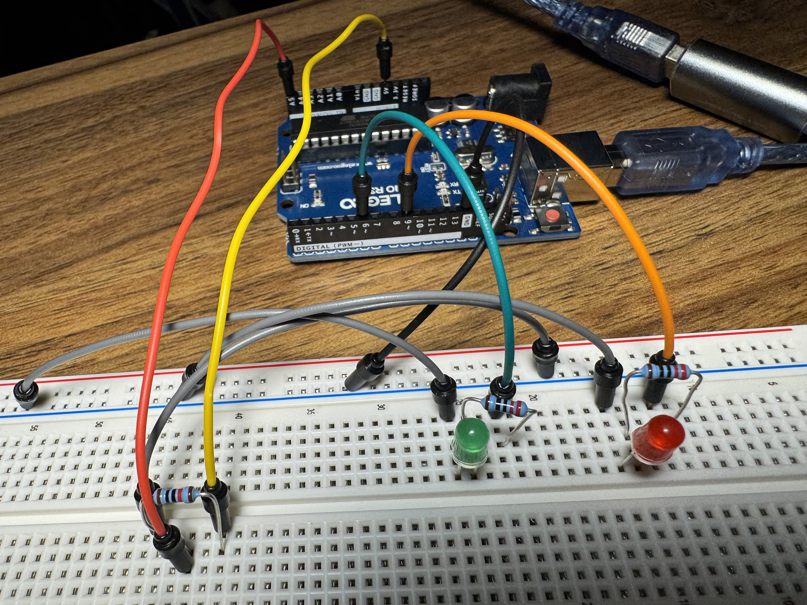
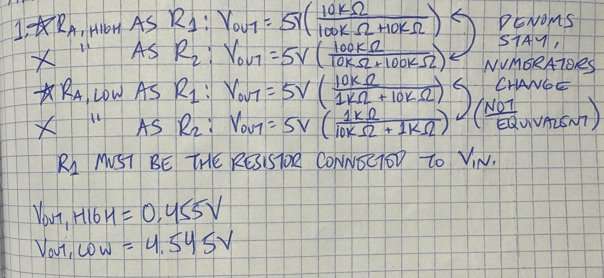
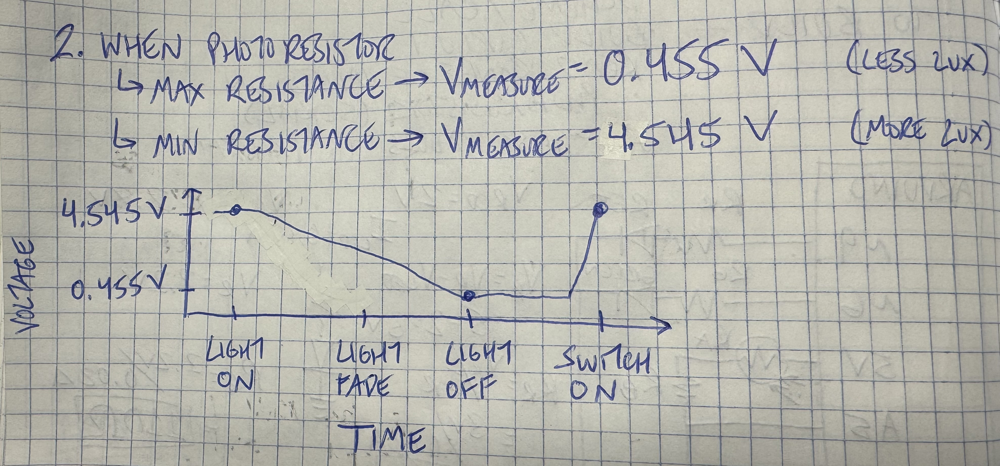

"You work at a smart home company and the CIO wants you to prototype a new
visualization for a product that senses something around the home.
You will create a schematic, circuit, and code that uses a variable resistance
sensor (e.g. either the photoresistor or the thermistor) in a voltage divider to
change the state of an output device. Your output device cannot be a single LED.
Your schematic description should explain the values chosen. You have to use
analogRead(), analogWrite(), the map function, and an if-statement in your code. You
should write something to your serial port, and you may not use the same message as the
example code. You have to justify why you are using the values you chose in your code
and what those values are corresponding to in your circuit!
Document your project on your webpage."
I started by writing out the requirements of the assignment and brainstorming some ideas. My invention was inspired by paranoia-- "Did I close that door?" "Did I turn off that light?"
I drew spme sketches to communicate my product idea.

I drew a schematic to visualize the circuit system, which included two LEDs and a photoresistor.
Just like last two assignments, neither of the LEDs would be on at the same time,
so I was able to treat each LED wire as a simple series circuit.
Since the resistors in my kit didn't exactly match my calculations, I went with 220Ω for each of the LED resistors.
For the resistor next to the photoresistor (R_B), I used the photoresistor datasheet to see what range of resistances the photoresistor could achieve (R_A).
R_A's range was about 1KΩ to 100KΩ.
In accordance with the V_Out equation, R_B should be equal magnitudes away from R_A,
low and R_A, high. Therefore, I used the geometric mean to determine that a 10KΩ resistor
would be suitable for this circuit.

I built my circuit using:


I then wrote the code to model the functionality I previously described.
/*
Modified Calibration Example
*/
// These constants won't change:
const int sensorPin = A5; // pin that the sensor is attached to
const int redLedPin = 9; // PWM pin that the red LED is attached to
const int greenLedPin = 6; // PWM pin that the green LED is attached to
// variables:
int sensorValue = 0; // the sensor value
int openSensorValue = 0; // sensor value when the light is on
int closedSensorValue = 0; // sensor value when the light is off
int sensorMin = 1023; // minimum sensor value
int sensorMax = 0; // maximum sensor value
int darkLightThreshold = 0; // threshold to switch LEDs based on light/darkness
void setup() {
// setting input and output pins
pinMode(sensorPin, INPUT);
pinMode(redLedPin, OUTPUT);
pinMode(greenLedPin, OUTPUT);
// setting up serial output
Serial.begin(9600);
// turn on LED to signal the start of the calibration period:
pinMode(LED_BUILTIN, OUTPUT);
digitalWrite(LED_BUILTIN, HIGH);
// calibrate during the first five seconds (flick light on and off to get measurements)
while (millis() < 5000) {
sensorValue = analogRead(sensorPin);
// Serial.print("Current value: ");
// Serial.println(sensorValue);
// record the maximum sensor value
if (sensorValue > sensorMax) {
sensorMax = sensorValue;
}
// record the minimum sensor value
if (sensorValue < sensorMin) {
sensorMin = sensorValue;
}
}
// print values to serial monitor for recordkeeping
Serial.print("Max value: ");
Serial.println(sensorMax);
Serial.print("Min value: ");
Serial.println(sensorMin);
darkLightThreshold = sensorMin + 100;
Serial.print("On/off threshold: ");
Serial.println(darkLightThreshold);
// signal the end of the calibration period
digitalWrite(LED_BUILTIN, LOW);
}
void loop() {
// read the sensor:
sensorValue = analogRead(sensorPin);
// in case the sensor value is outside the range seen during calibration
sensorValue = constrain(sensorValue, sensorMin, sensorMax);
// When the light is on, the red LED should corresponds with the amount of light hitting the photoresistor.
if(sensorValue < darkLightThreshold) {
// turn the green LED off
analogWrite(greenLedPin, 0);
// apply the calibration to the sensor reading
openSensorValue = map(sensorValue, sensorMin, sensorMax, 255, 0);
// fade the red LED on using the calibrated value:
analogWrite(redLedPin, openSensorValue);
// When the light is off, the green LED should correspond with the lack of light hitting the photoresistor.
} else {
// turn the red LED off
analogWrite(redLedPin, 0);
// apply the calibration to the sensor reading
closedSensorValue = map(sensorValue, sensorMin, sensorMax, 0, 255);
// fade the green LED on using the calibrated value:
analogWrite(greenLedPin, closedSensorValue);
}
}
I uploaded my code and sensed the heck out of my desk lamp.
1: In your voltage divider, can the variable resistor be either R1 or R2 or does it need to be one or the other? Justify your answer with example calculations.

Vout calculations will change if you swap R1 and R2 around. As shown, the denominator and coefficients will stay the same, but the numerator will change, affecting the final calculation. R1 must be the resistor connected to Vin.2: Draw a graph where the x-axis is time and the y-axis is voltage. Plot the voltage at V-measure (where your pin is reading the voltage) of your voltage divider of your shared gif/video.
This graph isn't exact to my video, but it matches my circuit. In my answer to Q1, I calculated Vmeasure to range from 0.455V (when there's less lux) to 4.545V (when there's more lux). When the overhead lamp is on, Vmeasure = 4.545V. When the lamp is off, Vmeasure = 0.455V. As I turned the lamp away, I gradually decreased the voltage. When I switched in on, it quickly jumped values.
3: AnalogWrite and analogRead are respectively 8-bit and 10-bit values. Imagine you had 10-bit PWM and a 16-bit analog-to-digital converter instead. How would this change your map() code? Explain your answer.
If I had a 10-bit PWM, my analogWrite() values could range from 0 to (2^10)-1=1023. If I had a 16-bit analog-to-digital converter, my analogRead() values could range from 0 to 2^16-1=65535. I would change my code by updating the ranges in map() like so:
openSensorValue = map(sensorValue, sensorMin, sensorMax, 1023, 0);
closedSensorValue = map(sensorValue, sensorMin, sensorMax, 0, 1023);
The analogRead() values would have a larger range, so I believe the sensor could measure changes with more sensitivity/resolution. The analogWrite() values would also have a larger range, allowing for more granular control over the LED brightnesses.
It wasn't listed in the assignment, but I assume I should answer Q4: Did you use AI tools in completing this assignment? If yes, please provide details on how/when, as well as a brief reflection. If no, you can either leave this question blank, or provide other information if you'd like.
I did not use AI for this assignment.